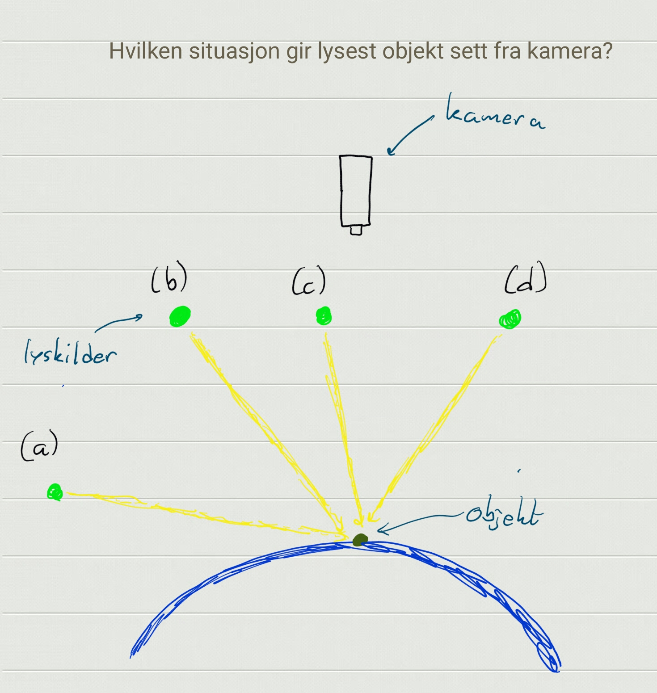
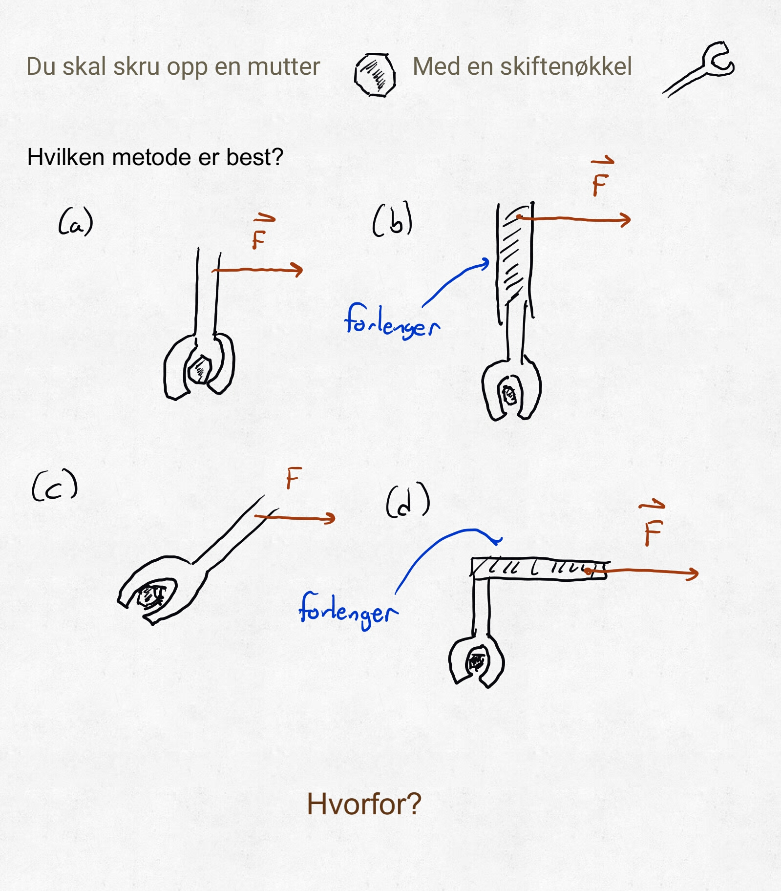
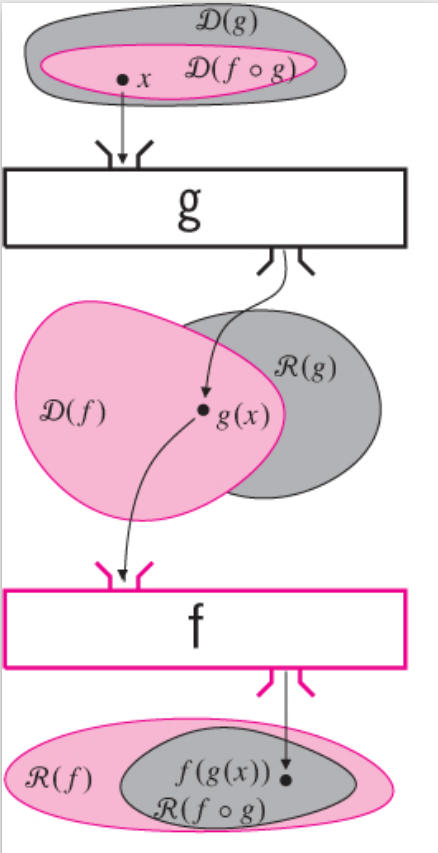

MAT100 for ELK og KOM
Uke 2
28.08.2017
Alexander Lundervold
institutt for data- og realfag
Sist uke
- Intro til MAT100. Praktisk info; kursets innhold
- Kapittel 10.2: Vektorregning
- Hva er en vektor? Hva brukes de til?
- Operasjoner på vektorer: sum, skalarmultiplikasjon, skalarprodukt
- Utfordring 1: Bestemme vinkel mellom vektorer.
- Utfordring 2: Skalar- og vektorprojeksjon
- Utfordring 3: Ortogonal dekomposisjon
- Startet på kapittel 10.3: Vektorproduktet / kryssproduktet
Denne uken
- 10.3: Vektorproduktet (kryss-produktet)
- Funksjoner
- P.4: Hva er funksjoner?
- P.5: Komposisjon av funksjoner
- P.6: Polynomer og rasjonale funksjoner
- P.7: Trigonometriske funksjoner (om vi får tid)
Referansegruppe
- Består av 3-4 studenter (og foreleser)
- Fungerer som et bindeledd mellom studenter og foreleser/institutt/HVL
- Møtes et par ganger i løpet av semesteret for å diskutere hva som fungerer bra og dårlig, og mulige forbedringstiltak
- Kan potensielt forbedre undervisningen, både dette semesteret og i senere år
Trenger frivillige! Tenk på det til neste gang
| Dreiemoment | Magnetfelt |

|
$\vec{F} = q\vec{v} \times \vec{B}$ |
|---|
Quiz 1
{kind=link}
Hvordan??
Indikert sist uke: Kryssprodukt og skalarprodukt!
| Dreiemoment | Magnetfelt |
|
$\vec{F} = q\vec{v} \times \vec{B}$ |
|---|
Quiz 2
{kind=link}
Høyrehåndssystem

Vektorproduktet
Lengde og retning:
Eksamensoppgave
Fra MAT100-eksamen, høsten 2014

Funksjoner
De tre viktigste:
polynomer, eksponensialer, trigonometriske funksjoner
{kind=link}
Danner "spillebrikkene" i kalkulus. Når vi deriverer og integrerer er det funksjoner vi arbeider med.
og
og
Signaler = Funksjoner!
Mer om dette senere
Komposisjon / sammensetting
{kind=link}
Trigonometriske funksjoner
Husk: Kan bruke sinus og kosinus til å splitte opp signaler
Ikke bare av teoretisk interesse! Husk f.eks.MRI. Kun en av et enormt antall anvendelser.
{kind=link}
Viktigste funksjonen i elektro:
$$s(t) = A\sin\big(\omega t + \varphi\big)$$Trigonometriske funksjoner
Hva er radianer? Hva er sinus og cosinus?